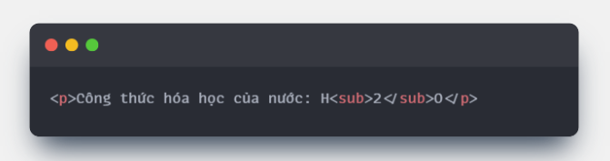

Dưới đây là "sơ lược" nội dung trình bày các bài học , kiến thức cơ bản về HTML của tôi!
Session1
Web basic HTML - Lý Thuyết
Lession 1 :
Thiết lập môi trường
- Tải và cài đặt Visual Studio Code
Extensions
- Live Server:
- Auto Rename Tag:
- CAuto Close Tag:
- Cài đặt các tiện ích mở rộng cần thiết
- Hoàn thiện môi trường lập trình
Lession 2 :
Sơ lược về Internet
- Internet là gì ?
Internet là một mạng lưới toàn cầu kết nối hàng tỷ thiết bị điện tử lại với nhau. Thay vì là một thực thể đơn lẻ, Internet được mô tả như một “Global Network of Networks” – một mạng khổng lồ được hình thành từ vô số mạng nhỏ liên kết với nhau. Nhờ Internet, các thiết bị có thể trao đổi dữ liệu, chia sẻ thông tin và cung cấp nhiều dịch vụ trực tuyến quen thuộc như email, website, game hay video trực tuyến
- Cách thức hoạt động của Internet
- Để hiểu Internet, hãy bắt đầu từ một ví dụ nhỏ: trong một ngôi nhà có nhiều máy tính. Nếu muốn các máy tính này trao đổi dữ liệu trực tiếp với nhau, chúng ta cần kết nối từng máy bằng dây cáp vật lý. Tuy nhiên, khi số lượng máy tính tăng lên, số dây kết nối cũng tăng theo cấp số nhân, dẫn đến sự phức tạp khó quản lý
- Để giải quyết vấn đề đó, bộ định tuyến (router) ra đời. Router hoạt động như một trung tâm kết nối: thay vì mỗi máy tính phải nối dây đến từng máy khác, tất cả chỉ cần kết nối đến router. Router chịu trách nhiệm định tuyến dữ liệu đến đúng thiết bị cần thiết, giúp việc xây dựng và quản lý mạng trở nên đơn giản hơn
- Mở rộng mô hình này lên quy mô toàn cầu, chúng ta có Internet nơi hàng tỷ thiết bị trên khắp thế giới được kết nối thông qua nhiều lớp router và hạ tầng mạng
- Các thành phần cơ bản của Internet
- Địa chỉ IP: Mỗi thiết bị trong mạng đều có một địa chỉ IP riêng biệt để định danh và nhận dạng. Nhờ địa chỉ IP, dữ liệu có thể biết chính xác điểm đến của nó
- Giao thức TCP/IP: Đây là bộ quy tắc chuẩn giúp các thiết bị trên toàn thế giới có thể giao tiếp với nhau theo cùng một ngôn ngữ. TCP/IP đảm bảo dữ liệu được truyền đi đúng cách và đến đúng nơi
- Hạ tầng vật lý: Internet hoạt động dựa trên một mạng lưới cáp vật lý trải dài toàn cầu, bao gồm cáp quang ngầm dưới biển và cáp trên mặt đất. Hạ tầng này được triển khai và quản lý bởi các công ty viễn thông và nhà mạng, đóng vai trò xương sống của Internet
- Vai trò của Internet trong đời sống
Internet không chỉ là công nghệ kết nối, mà còn là nền tảng hạ tầng cho nhiều hoạt động số hiện đại. Một số ứng dụng phổ biến gồm:
- Email: Gửi và nhận thư điện tử tức thì
- Website: Truy cập thông tin, học tập và làm việc trực tuyến
- Game online: Kết nối người chơi toàn cầu
- Streaming video: Xem phim, nghe nhạc và nội dung số theo thời gian thực
- Kết luận
Internet là kết quả của việc kết nối hàng tỷ thiết bị trên toàn cầu thông qua router, địa chỉ IP, giao thức TCP/IP và hạ tầng cáp vật lý. Nó là cầu nối thông tin toàn cầu, vừa phức tạp về mặt kỹ thuật vừa quen thuộc trong đời sống hàng ngày. Hiểu được sơ lược về Internet không chỉ giúp chúng ta thấy rõ tầm quan trọng của nó mà còn tạo nền tảng vững chắc để học và phát triển các kỹ năng lập trình web sau này
Lession 3 :
Web là gì ?
Lession 4 :
HTML, Css, JavaScript là gì ?
Lession 5 :
HTML là gì ?
Lession 6 :
HTML boilerplate
Lession 7 :
Heading Elements (Thẻ Heading)
Lession 8 :
Heading Elements (Thẻ Elements)
Lession 9 :
List Elements (Thẻ Danh sách)
Lession 10 :
Image Elements (Thẻ Hình ảnh)
Lession 11 :
Anchor Elements (Thẻ Liên kết)
Lession 12 :
Inline Elements & Block Elements (Thẻ Form)
Lession 13 :
Online Learning Resources
- Giới thiệu chung
- Đặc điểm của thẻ "img"
- Các thuộc tính quan trọng của thẻ "img"
- Quản lý hình ảnh trong dự án
- Tổng kết các đặc điểm chính
- Lưu ý quan trọng
- Kết luận
Session 2
Lession 1
HTML5 là gì ? Các thẻ của HTML5
Lession 2
Entily trong HTML
Lession 3
Semantics trong HTML
Lession 4
Tổng quan về Table trong HTML
Lession 5
TR, TD, TH Elements
Lession 6
Lession 7
Lession 8
Lession 9
Lession 10
Lession 11
Lession 12
Lession 13
| STT |
Định nghĩa |
Bối cảnh |
Các loại tag |
Ví dụ |
Lợi ích |
Ứng dụng |
Lưu ý |
Kết luận |
Ảnh tham khảo |
| STT |
Định nghĩa |
Bối cảnh |
Các loại tag |
Ví dụ |
Lợi ích |
Ứng dụng |
Lưu ý |
Kết luận |
Ảnh tham khảo |
| Lession 1 |
HTML và HTML5 là gì?... |
HTML5 là phiên bản mới và được mở rộng hơn của HTML. Nó bổ sung nhiều thẻ và tính năng hiện đại, giúp định nghĩa cấu trúc nội dung rõ ràng hơn và hỗ trợ tốt hơn cho các ứng dụng web ngày nay |
- Thẻ < hr > Đường kẻ ngang
- Thẻ < br > Xuống dòng
- Thẻ < sup > Chỉ số trên (Số mũ)
- Thẻ < sub > Chỉ số dưới (Chỉ số dưới)
|
... |
... |
... |
... |
- HTML5 không chỉ ...
- Nắm vững những ...
|
 |
| Lession 2 |
... |
... |
... |
... |
... |
... |
... |
... |
... |
...
...
...
...
...
...
...
...
...
...
Click me!
Visit Rikkei Education
Trang chủ
Không có href